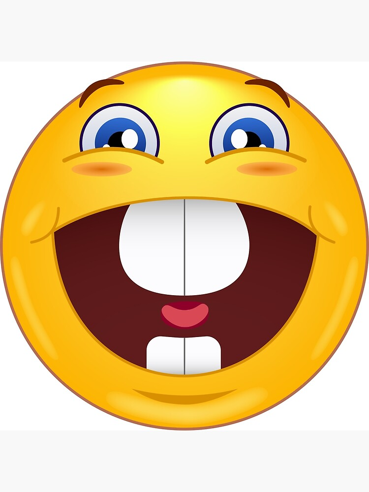

Desafio do Sono
Qual desses ruídos se parecem mais a Paloma dormindo?
Escolha o som que mais se parece!
Tocar Áudio 1
Esse!
Tocar Áudio 2
Esse!
Não nos conhece tão bem assim, né? 😅
Você acertou!

Agora, vamos para a próxima etapa! 💖